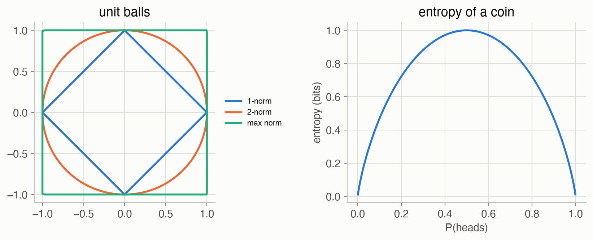
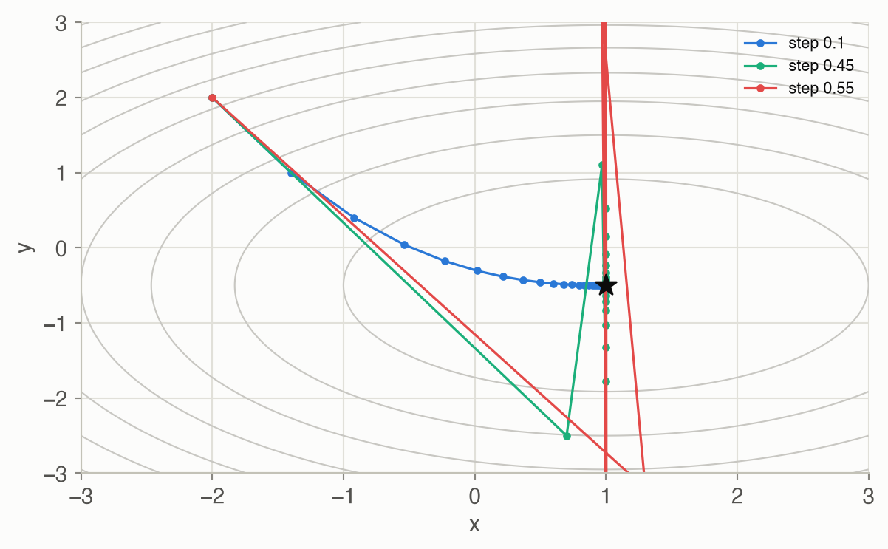
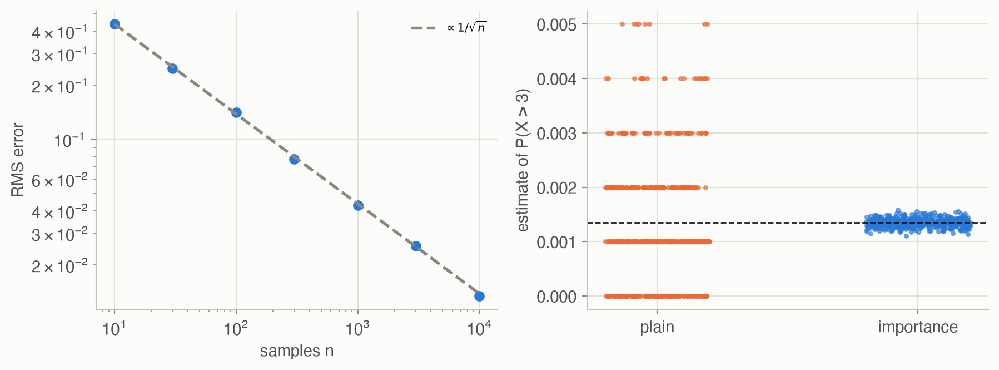
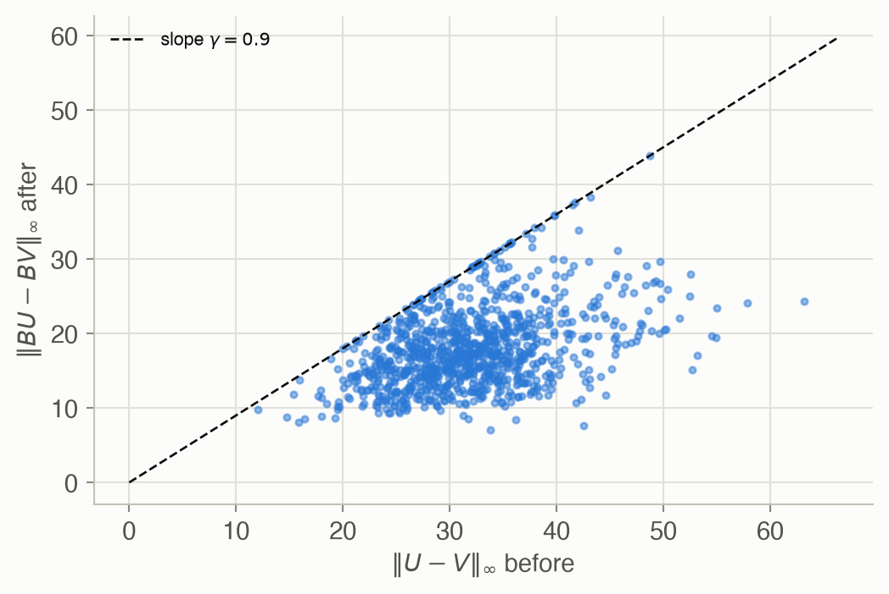

A · Mathematical Concepts
Appendices
This appendix collects the mathematics used across the site, each idea with a small computed example and a pointer to where it is used. It follows the topics of ADM Appendix A.
Spaces: measuring size and distance
A probability space \((\Omega, \mathcal{E}, P)\) has a set of outcomes \(\Omega\), a collection \(\mathcal{E}\) of events (subsets of \(\Omega\) we can assign probabilities to), and a probability measure \(P\) with \(P(\Omega) = 1\) that adds up over disjoint events (ADM §A.1–A.2). A metric \(d(x, y)\) measures distance: it is zero only when \(x = y\), symmetric, and obeys the triangle inequality (§A.3). On vectors, distances usually come from a norm:
\[ \|\mathbf{x}\|_p = \Big(\sum_i |x_i|^p\Big)^{1/p}, \qquad \|\mathbf{x}\|_\infty = \max_i |x_i| \tag{1}\]
In words. A norm measures a vector’s size; \(p\) decides how much the largest component dominates.
Term by term.
- \(p = 1\): the sum of absolute values (“taxicab” length); \(p = 2\): the ordinary Euclidean length; \(p = \infty\): the largest component only.
- The distance between two vectors is the norm of their difference, \(\|\mathbf{x} - \mathbf{y}\|_p\).
- Example: \(\mathbf{x} = (3, -4)\) has norms 7, 5 and 4 for \(p = 1, 2, \infty\).
Why it holds. Each is a norm: zero only for the zero vector, scales with \(|c|\) when the vector is multiplied by \(c\), and satisfies the triangle inequality (Minkowski’s inequality). The max norm is the limit of \(\|\mathbf{x}\|_p\) as \(p \to \infty\). It is the norm in which the Bellman backup contracts (see below).
Positive definiteness
A symmetric matrix \(\mathbf{A}\) is positive definite if (ADM §A.5)
\[ \mathbf{x}^\top \mathbf{A}\, \mathbf{x} > 0 \quad \text{for every } \mathbf{x} \ne \mathbf{0} \tag{2}\]
In words. The quadratic form \(\mathbf{x}^\top \mathbf{A}\mathbf{x}\) is a bowl: positive in every direction away from the origin.
Term by term.
- \(\mathbf{x}^\top \mathbf{A}\mathbf{x} = \sum_{i,j} A_{ij} x_i x_j\), a number for each \(\mathbf{x}\).
- Equivalently, all eigenvalues of \(\mathbf{A}\) are positive. ≥ 0 instead of > 0 gives positive semidefinite.
- Example: \(\begin{bmatrix}2 & 1\\1 & 2\end{bmatrix}\) has eigenvalues 1, 3: positive definite. \(\begin{bmatrix}1 & 2\\2 & 1\end{bmatrix}\) has −1, 3: indefinite, a saddle.
Why it holds. Writing \(\mathbf{x}\) in the eigenvector basis turns the form into \(\sum_i \lambda_i y_i^2\), which is positive for every nonzero \(\mathbf{y}\) exactly when every \(\lambda_i > 0\). Covariance matrices (Chapter 19’s Kalman filter) are positive semidefinite; a positive definite Hessian means a strict local minimum.
Convexity
A function \(f\) is convex if the chord between any two points lies on or above the graph (ADM §A.6):
\[ f\big(\lambda x + (1 - \lambda) y\big) \le \lambda f(x) + (1 - \lambda) f(y) \quad \text{for all } x, y \text{ and } \lambda \in [0, 1] \tag{3}\]
In words. The function at a weighted average is at most the weighted average of the function.
Term by term.
- \(\lambda x + (1 - \lambda) y\): a point on the segment between \(x\) and \(y\).
- The right side is the height of the chord above that point.
- A set is convex if it contains every segment between its points; \(f\) is concave if \(-f\) is convex.
Why it holds. It’s a definition. Its use: a convex function’s local minima are global, and it lies above its tangent lines. On this site: the optimal value function of a POMDP is convex in the belief (Chapter 20), which makes alpha vectors and the sawtooth and triangulated bounds of Chapter 21 work.
Information and entropy
The information content of an outcome with probability \(P(x)\) is \(-\log P(x)\): rare outcomes are more surprising (ADM §A.7). Averaging gives entropy, and using the wrong model gives cross entropy (§A.8–A.10):
\[ H(P) = -\sum_x P(x) \log P(x), \qquad H(P, Q) = -\sum_x P(x) \log Q(x), \qquad D_{\mathrm{KL}}(P \,\|\, Q) = H(P, Q) - H(P) = \sum_x P(x) \log \frac{P(x)}{Q(x)} \tag{4}\]
In words. Entropy is the average surprise of outcomes from \(P\). Cross entropy is the average surprise if you expected \(Q\) instead. Their difference, the KL divergence, is the extra surprise from using the wrong model.
Term by term.
- With \(\log_2\) the units are bits: a fair coin has \(H = 1\) bit; a coin with \(P(\text{heads}) = 0.9\) has 0.469 bits.
- For \(P = (0.5, 0.3, 0.2)\) and \(Q = (0.4, 0.4, 0.2)\): \(H(P) =\) 1.485 bits; \(H(P, Q) =\) 1.522; \(D_{\mathrm{KL}}(P\|Q) =\) 0.0365 but \(D_{\mathrm{KL}}(Q\|P) =\) 0.0372: it isn’t symmetric.
- \(D_{\mathrm{KL}}\) is infinite if \(Q(x) = 0\) for some \(x\) with \(P(x) > 0\).
Why it holds. \(D_{\mathrm{KL}} \ge 0\), with equality only when \(P = Q\) (Gibbs’ inequality): since \(\log\) is concave, Jensen’s inequality gives \(\sum_x P(x)\log\frac{Q(x)}{P(x)} \le \log \sum_x Q(x) = 0\). Used on this site: maximum likelihood minimizes cross entropy to the data (Chapter 4), Bayesian scores (Chapter 5), trust regions (Chapter 12), and maximum entropy IRL (Chapter 18).
Gradient ascent
To climb a differentiable function \(f\), repeatedly step uphill (ADM §A.11):
\[ \mathbf{x} \leftarrow \mathbf{x} + \alpha\, \nabla f(\mathbf{x}) \tag{5}\]
In words. Move a small step in the direction in which \(f\) increases fastest.
Term by term.
- \(\nabla f(\mathbf{x})\): the gradient, the vector of partial derivatives; it points uphill.
- \(\alpha > 0\): the step size. Too small is slow; too large overshoots and can diverge.
- For a quadratic with curvature \(c\) along some direction, the iteration is stable only if \(\alpha < 2/c\).
Why it holds. By Taylor’s theorem, \(f(\mathbf{x} + \alpha\nabla f) \approx f(\mathbf{x}) + \alpha\|\nabla f\|^2\), which increases \(f\) for small enough \(\alpha\). Along a direction with curvature \(c\) the error is multiplied by \(1 - \alpha c\) each step, which shrinks only if \(|1 - \alpha c| < 1\), that is \(\alpha < 2/c\). The example in Figure 3 has curvatures 2 and 4, so the limit is 0.5. Used for policy gradients (Chapters 11–13), controllers (Chapter 23) and games (Chapter 24).
Taylor expansion
A smooth function near a point \(a\) is approximated by a polynomial (ADM §A.12):
\[ f(x) = \sum_{n=0}^{\infty} \frac{f^{(n)}(a)}{n!}\,(x - a)^n \approx f(a) + f'(a)(x - a) + \tfrac{1}{2} f''(a)(x - a)^2 \tag{6}\]
In words. Near \(a\), a function looks like its value, plus its slope times the distance, plus half its curvature times the distance squared, and so on.
Term by term.
- \(f^{(n)}(a)\): the \(n\)-th derivative at \(a\); \(n!\) keeps the terms matched.
- Truncating after the linear term gives the first-order approximation used for gradients; after the quadratic term, the second-order one used in Newton’s method and trust regions.
- Example: \(\cos(0.5) =\) 0.8776; the approximations of order 0, 2 and 4 around 0 give 1.0000, 0.8750, 0.8776.
Why it holds. For analytic functions the series converges to \(f\) near \(a\); for functions differentiable enough, the error after the order-\(n\) term is proportional to \((x - a)^{n+1}\) (Taylor’s theorem with remainder).
Monte Carlo estimation and importance sampling
Expectations that can’t be computed exactly can be estimated by sampling (ADM §A.13–A.14):
\[ \mathbb{E}_{x \sim P}[f(x)] \approx \frac{1}{n}\sum_{i=1}^{n} f(x^{(i)}),\ x^{(i)} \sim P \qquad\text{or}\qquad \approx \frac{1}{n}\sum_{i=1}^{n} f(x^{(i)})\, \frac{P(x^{(i)})}{Q(x^{(i)})},\ x^{(i)} \sim Q \tag{7}\]
In words. Average the function over samples. If you can only (or would rather) sample from \(Q\), reweight each sample by how much more likely it was under \(P\).
Term by term.
- The plain estimate is unbiased, with standard error \(\sigma/\sqrt{n}\): ten times the samples buys about three times the accuracy.
- The weights \(P(x)/Q(x)\) correct for sampling from \(Q\); \(Q\) must be positive wherever \(P f\) is nonzero.
- A good \(Q\) puts samples where \(f(x)P(x)\) is large. Example: \(P(X > 3)\) for \(X \sim \mathcal{N}(0, 1)\) is 0.00135. With 1000 samples, plain Monte Carlo’s estimates had a standard deviation of 0.00117; sampling from \(\mathcal{N}(3, 1)\) and reweighting, 0.000078.
Why it holds. \(\mathbb{E}_Q\big[f(x) P(x)/Q(x)\big] = \sum_x Q(x) f(x) P(x)/Q(x) = \mathbb{E}_P[f(x)]\), so both are unbiased; the law of large numbers makes the averages converge, and the central limit theorem gives the \(1/\sqrt{n}\) rate. Used for inference (Chapter 3), online planning (Chapter 9), policy gradients (Chapter 11) and validation (Chapter 14).
Contraction mappings
A function \(B\) is a contraction in a norm if it brings every two points closer by at least a fixed factor (ADM §A.15):
\[ \|B U - B V\| \le \gamma\, \|U - V\| \quad \text{for all } U, V, \text{ with } \gamma < 1 \tag{8}\]
In words. Applying \(B\) shrinks every distance by at least a factor \(\gamma\).
Term by term.
- For MDPs, \(B\) is the Bellman backup \((BU)(s) = \max_a [R(s, a) + \gamma \sum_{s'} T(s' \mid s, a) U(s')]\) and the norm is the max norm.
- Consequence (the Banach fixed-point theorem): \(B\) has exactly one fixed point \(U^*\), and iterating \(B\) from anywhere converges to it, the error shrinking by \(\gamma\) each step. That is why value iteration works (Chapter 7).
- Check on Hex World: over 1000 random pairs of value functions, the largest ratio \(\|BU - BV\|_\infty / \|U - V\|_\infty\) was 0.9000, never above \(\gamma = 0.9\).
Why it holds. For each state, the difference of two maxima is at most the largest difference of their terms, \(|\max_a g(a) - \max_a h(a)| \le \max_a |g(a) - h(a)|\). Each term differs by \(\gamma \sum_{s'} T(s' \mid s, a)(U(s') - V(s'))\), an average of differences scaled by \(\gamma\), so at most \(\gamma \|U - V\|_\infty\).
Graphs
A graph has nodes and edges between them (ADM §A.16). In a directed graph each edge points from a parent to a child; a directed graph with no cycles is a DAG, and its nodes can be put in a topological order in which every parent comes before its children. Bayesian networks (Chapter 2) are DAGs; search trees (Appendix E) and coordination graphs (Chapter 27) are graphs too.
Figures


At step 0.1 the path converged (distance 0.0037 after 30 steps); at 0.45 it converged while zigzagging along \(y\); at 0.55, above the limit \(2/4 = 0.5\), \(y\) reached 593.


Code
def entropy(p, base=2.0) -> float:
"""H(P) = -sum_x P(x) log P(x); terms with P(x) = 0 contribute 0."""
p = np.asarray(p, dtype=float)
nz = p > 0
return float(-(p[nz] * np.log(p[nz])).sum() / np.log(base))
def cross_entropy(p, q, base=2.0) -> float:
"""H(P, Q) = -sum_x P(x) log Q(x): the average surprise of outcomes
from P under a model Q. Infinite if Q misses something P can do."""
p, q = np.asarray(p, dtype=float), np.asarray(q, dtype=float)
nz = p > 0
if np.any(q[nz] == 0):
return np.inf
return float(-(p[nz] * np.log(q[nz])).sum() / np.log(base))
def kl_divergence(p, q, base=2.0) -> float:
"""D_KL(P || Q) = H(P, Q) - H(P) >= 0, zero only when P = Q."""
return cross_entropy(p, q, base) - entropy(p, base)
def gradient_ascent(grad, x0, alpha, k_max) -> Array:
"""x <- x + alpha grad f(x), k_max times. Returns every iterate."""
xs = [np.asarray(x0, dtype=float)]
for _ in range(k_max):
xs.append(xs[-1] + alpha * np.asarray(grad(xs[-1])))
return np.array(xs)
def bellman_backup(T, R, gamma, U) -> Array:
"""(B U)(s) = max_a [R(s, a) + gamma sum_s2 T(s2 | s, a) U(s2)]."""
return (R + gamma * T @ U).max(axis=1) # T @ U sums over s2using LinearAlgebra
# Entropy, cross entropy and KL divergence in bits; 0 log 0 counts as 0.
entropy(p) = -sum(x * log2(x) for x in p if x > 0)
cross_entropy(p, q) = -sum(pi * log2(qi) for (pi, qi) in zip(p, q) if pi > 0)
kl(p, q) = cross_entropy(p, q) - entropy(p)
p, q = [0.5, 0.3, 0.2], [0.4, 0.4, 0.2]
println("H(P) = ", round(entropy(p); digits = 3), ", KL(P||Q) = ", round(kl(p, q); digits = 4),
", KL(Q||P) = ", round(kl(q, p); digits = 4))
@assert entropy([0.5, 0.5]) == 1 && kl(p, p) == 0 && kl(p, q) != kl(q, p)
# Gradient ascent on f(x, y) = -(x - 1)^2 - 2(y + 1/2)^2: stable only for α < 2/4.
∇f(x) = [-2(x[1] - 1), -4(x[2] + 0.5)]
function ascend(α; k = 60)
x = [-2.0, 2.0]
for _ in 1:k
x = x .+ α .* ∇f(x)
end
return x
end
@assert norm(ascend(0.45) - [1, -0.5]) < 1e-3 && abs(ascend(0.55)[2]) > 100Where these are used
| Concept | Used in |
|---|---|
| Norms, distances | Ch 7 (convergence), Ch 8 (nearest neighbors), Ch 21 (belief spacing) |
| Positive definiteness | Ch 19 (covariances), Ch 10 (cross-entropy method covariances) |
| Convexity | Ch 20–21 (value functions over beliefs) |
| Entropy, KL | Ch 4–5, Ch 12, Ch 18 |
| Gradient ascent | Ch 11–13, Ch 23, Ch 24 |
| Monte Carlo, importance sampling | Ch 3, Ch 9, Ch 11, Ch 14 |
| Contraction | Ch 7 (value iteration), Ch 8 |
| Graphs | Ch 2–5, Appendix E, Ch 27 |